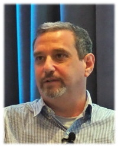
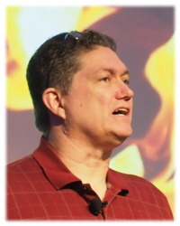

Two perspectives on the maintainer relationship
A developer's view
Gilad Ben-Yossef is the developer of the TrustZone CryptoCell device driver, which is slated to move into the mainline in the 4.17 cycle after a period in the staging tree. Staging, he said, is a place for code that is "on probation", waiting to see if it can be brought up to the kernel's standards for mainline code. Getting the CryptoCell driver out of staging was a sometimes difficult and frustrating process but, at the end, he came to a surprising realization: during that process, 30% of the code had been removed from the driver with no loss in functionality. This was a good thing and a nice benefit from the kernel's code-review processes, but it was also discouraging in that 30% of the code he started with was worthless — or worse.
So where did all of this extra code come from? He identified seven
different types of useless code, the first of which was described as
"reinventing the wheel". Much of the code in the driver was reimplementing
functionality that was already available elsewhere in the kernel. When

Much of the code in the CryptoCell driver was there for backward compatibility, using what he called a "back to the future" approach where a lot of #ifdef blocks were employed to isolate kernel-version-specific code. The better approach, he found, was to simply base the driver on the current mainline kernel and to have that driver support all versions of the device in question. That driver can then be backported to older kernel versions if necessary, with help from the tools at backports.wiki.kernel.org. The process is mostly automated and nearly painless, and it allows a lot of code to be removed from the upstream driver.
Another source of code bloat is the use of the wrong API. The CryptoCell driver was using sysfs to export what was essentially debugging information, for example. Switching to debugfs accomplished the same thing with ¼ of the code.
The next problem was "duct tape". The crypto layer supports both synchronous and asynchronous APIs, and drivers can implement one or both of those interfaces. The CryptoCell driver supported the asychronous API, which is a better fit to the hardware, but some of the more important users (such as the dm-verity target) expected the synchronous API. Supporting both in CryptoCell led to an "ugly and unstable" solution. The better solution was to convert dm-verity to the asynchronous API. The lesson here is to fix problems at their source rather than working around them in driver code.
The driver included a fair amount of "macro gymnastics" that were mostly the result of trying to implement a hardware abstraction layer. These layers have a bad reputation in the kernel community; they tend to lead to poor performance and driver code that is harder to maintain. The solution was to simply rip all of that stuff out. Whenever you see a lot of wrappers, he said, you should be asking whether they make sense.
"Zombie code" is surprisingly prevalent, despite the normal expectations that a maintained driver wouldn't have much unused code. Some of the code that was found had never been used. This code should always come out; removed code cannot be used against you, he said. This is especially important given the Spectre vulnerability, where even code that is never called can be made to execute speculatively.
Finally, "don't repeat yourself" is "programming 101", but unneeded repetition of code tends to happen anyway. Copy-and-paste is a way of life. Such code should be pulled together and generalized as needed; the result will be a much shorter driver.
While Ben-Yossef talked mostly about the ways in which he was able to reduce the size of the driver, the key point from the talk was something else. Taking out all of that code improved the quality of the driver considerably, and all of those benefits were a direct result of the process of upstreaming the driver into the mainline kernel. Upstreaming is not just the right thing to do; it has a huge positive effect on the quality of the code itself. It is a way to get the attention of a community of experts, all of whom are working to improve the quality of the kernel altogether. While the process was frustrating at times, it was all worthwhile in the end.
The maintainer's paradox
Tim Bird has been a member of the embedded Linux community for a long time, but he had not worked in a maintainer role until he took over responsibility for the Fuego project. That gave him a different perspective on how the community works that he shared in a keynote presentation.
As a maintainer, he is excited to see new contributions to the project show
up on the mailing lists. He appreciates new ideas and new contributors.
But he also approaches new contributions with a bit of fear and

The experience of being a maintainer, he said, can be overwhelming; his experience has caused him to rethink the times that he has gotten annoyed with maintainers in the past. A patch contribution is a bit like getting a puppy; we all want one, but don't always think about how much work is involved.
The community, he said, likes to think that its decisions are based entirely on merit. In truth, there is also an important social element involved in working in the development community. Despite our efforts to just review code and judge it on its own merits, there are personalities involved. As a result, we see snippy answers and negative things happening in our communication channels. He referred to Daniel Vetter's recent talk as a description of how things can go wrong, while noting that he didn't agree with everything that was said there.
There are a few things we can do to help reduce the amount of negativity in our community, he said. We should call out negative communication when we see it. That is sometimes best done in private, but it can sometimes be necessary to do it publicly when things get especially bad. In the presence of continued problems, the best thing is often to route around persistent offenders. That is relatively easy to do in subsystems that have group maintainership, a model which not only gives contributors multiple paths to acceptance but also relieves the stress on the maintainers themselves.
Maintainers and developers should always listen carefully and make active efforts to clarify the message they are receiving. Many problems have simple miscommunication at their root, he said. Any developer can assist maintainers by answering questions when they are asked and helping other developers in general. And, finally, developers should become maintainers as well, so that they, too, can "enjoy this overwhelming feeling".
Bird closed with a plea to everybody in the room: find something to do in the community. There are roles for everybody out there, and there is no shortage of work to be done. In his 25 years of experience, he has never found anything quite like the kernel community. It is a place where anybody can contribute and create value for humanity as a whole.
[Thanks to the Linux Foundation, LWN's travel sponsor, for supporting your
editor's travel to ELC.]
| Index entries for this article | |
|---|---|
| Kernel | Development model |
| Conference | Embedded Linux Conference/2018 |
Posted Mar 22, 2018 5:11 UTC (Thu)
by hifi (guest, #109741)
[Link] (2 responses)
Posted Mar 22, 2018 13:12 UTC (Thu)
by pm215 (subscriber, #98099)
[Link] (1 responses)
One awkward dilemma with the quick-ack or quick-review is that I don't want to be doing all the code review for things I maintain, so sometimes I end up deliberately not replying to patches in the hope that somebody else will do the review...
I also find that the traditional "patches on a mailing list" approach makes it harder to track patches that need some kind of initial response or which have fallen through the cracks and not got any response at all -- does anybody have good tooling for that sort of thing?
Posted Mar 23, 2018 6:31 UTC (Fri)
by marcH (subscriber, #57642)
[Link]
Like... any code review tool? https://lwn.net/Articles/702177/
Two perspectives on the maintainer relationship
Two perspectives on the maintainer relationship
Two perspectives on the maintainer relationship